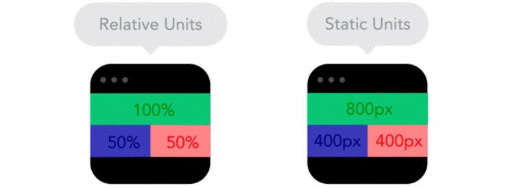

El diseño responsive, adaptativo o responsivo es una técnica de diseño web que
busca la correcta visualización de una misma página en distintos dispositivos. Se caracteriza porque los
layouts (contenidos) e imágenes son fluidos y se usa código media-queries de CSS3.El responsive design incluye:
- Elementos HTML5
- Consultas de medios CSS
- Unidades CSS
- El uso de varios activos de un solo recurso
- El enfoque mobile first
Ventajas del diseño responsive:
- Más fácil para formularios grandes en donde queremos conseguir mucha información del usuario.
- Diseño, desarrollo y mantenimiento más rentable.
Desventajas del diseño responsive:
- No es 100% adaptable en móviles.
Recomendaciones: Es necesario usar unidades relativas (como el porcentaje de la pantalla), en lugar
de unidades estáticas (como los píxeles).
Mobile First Web: es una tendencia de diseño y maquetación web orientada a dar prioridad a la visualización
en dispositivos móviles, es decir, se diseña una web para smartphones y tablets y su estructura se adapta a los ordenadores
(al contrario de lo que se venía haciendo hasta hace poco).Ventajas del diseño web mobile first:
- Mejor experiencia de usuario
- La mayor parte de usuarios navegan con dispositivos móviles
- Se pueden utilizar las funciones del teléfono (cámara, localización, grabadora)
- Menor velocidad de carga
Desventajas del diseño web mobile first:
- La experiencia en desktop no está 100% optimizada
- No es lo más óptimo para tu SEO (si ese es tu objetivo)
- No es adecuado para webs con contenido muy pesado
Comprobar web mobile first:
Para saber si una página tiene un diseño optimizado para móviles: En la pagina ingresar link de pagina web o codigo en el link:
https://search.google.com/test/mobile-friendly?utm_source=mft&utm_medium=redirect&utm_campaign=mft-redirect&hl=es
Diferencias entre el Mobile First y diseño web responsive: El diseño web responsive piensa primero en el usuario desde el PC
mientras que, el diseño web Mobile First, tienen en cuenta primero al usuario que accede desde un dispositivo móvil.
CSS media queries: Las media queries (en español "consultas de medios") son útiles cuando deseas modificar tu página web o aplicación
en función del tipo de dispositivo (como una impresora o una pantalla) o de características y parámetros
específicos (como la resolución de la pantalla o el ancho del del navegador).
_________________________________________________